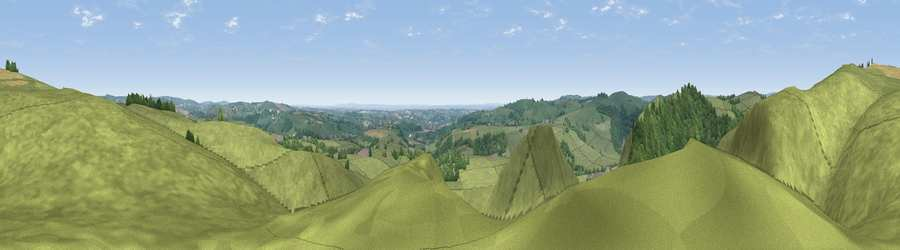

Viewpoint near Thorpe
#11377 in England · top 9% of its area beats it · near ThorpeWhere it is
The exact computed spot (SK 15553 51532). Click the marker for map links.
The view, rendered

A 360° render of this exact spot computed from the terrain model, tree cover and land cover — summer colours, afternoon light, calibrated against photographs of famous viewpoints. Real trees, hedges and buildings will differ in detail.
The panorama
Grey silhouette: terrain skyline in each direction (720 bearings, Earth curvature and refraction included). Dashed green: skyline with trees (+15 m) and buildings (+8 m) as obstacles. Blue strip: how far the ground is visible on each bearing.
Where the view opens
Wedge length = distance to the farthest visible ground on that bearing (vegetation-aware). Rings at 10, 25 and 50 km.
What fills the view
83% grassland · 16% woodland · 1% cropland
Angular shares of the visible panorama (visual magnitude), not map area. Landscape diversity 0.22 (0–1 Shannon).
Key numbers
More beautiful places nearby
The staircase of upgrades: each row has a higher view potential than everything closer. Driving times are estimates from straight-line distance, calibrated against real road routing — check an actual route before setting out.
| Place | Direction | Drive | Score |
|---|---|---|---|
| Tissington Hill | NNW · 1 km | ~3 min | 75.5 |
| Viewpoint near Mow Cop | WNW · 30 km | ~47 min | 78.9 |
| Viewpoint near Mow Cop | W · 30 km | ~47 min | 80.2 |
| Viewpoint near Harthill | W · 64 km | ~87 min | 80.5 |
| Viewpoint near Little Wenlock | SW · 68 km | ~91 min | 84.2 |
| The Wrekin | SW · 68 km | ~91 min | 85.0 |
| Viewpoint near Little Wenlock | SW · 68 km | ~92 min | 86.6 |
| North Hill | SSW · 112 km | ~136 min | 86.8 |
53.06081, -1.76938 · source: osm peak · position refined by local search. Computed location — check access rights before visiting.